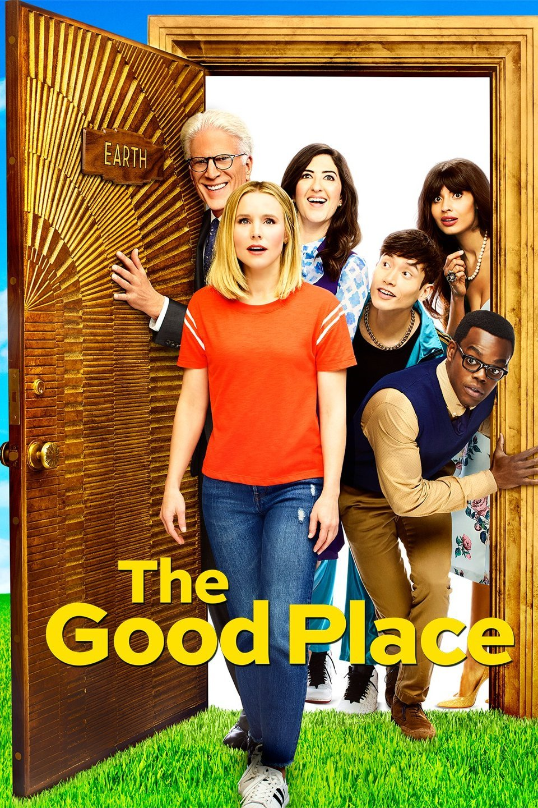
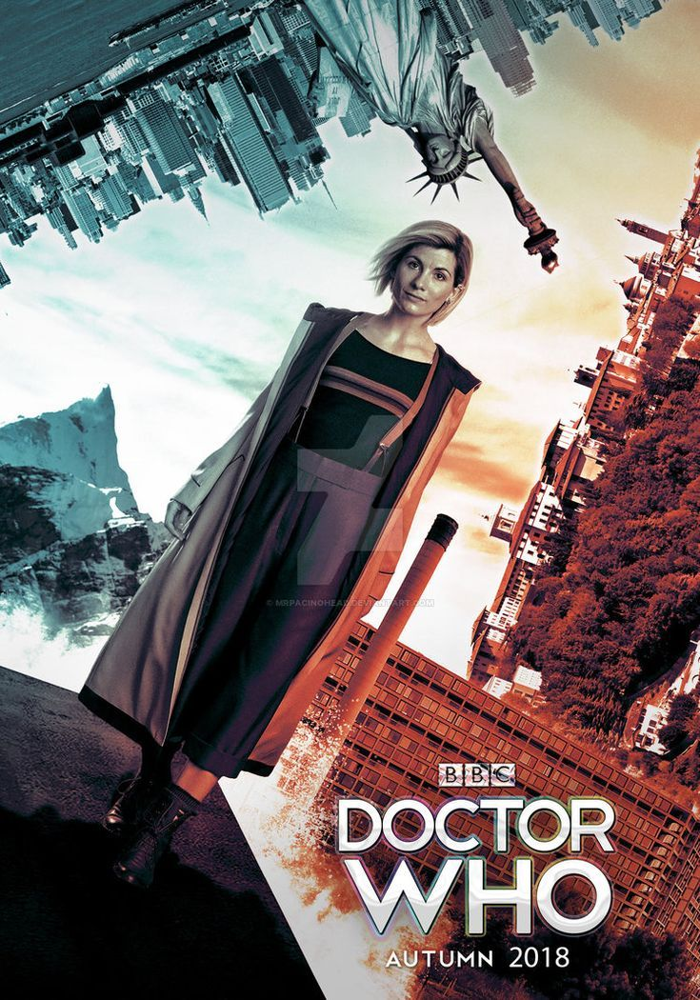
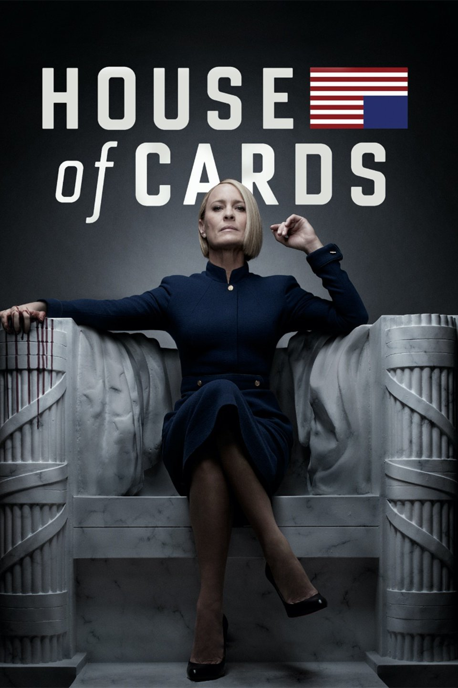
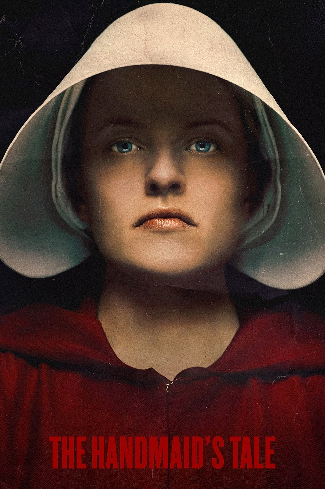

| |
The Walking Deadby Frank DarabontIMDBb: 8.4/10, Rotten Tomatoes: 81%, Google Users: 94% Genre: Post-Apocalyptic/Horror Description: Based on the comic book series written by Robert Kirkman, this gritty drama portrays life in the months and years that follow a zombie apocalypse. Led by former police officer Rick Grimes, his family and a group of other survivors find themselves constantly on the move in search of a safe and secure home. But the pressure each day to stay alive sends many in the group to the deepest depths of human cruelty, and Rick discovers that the overwhelming fear of the survivors can be more deadly than the zombies walking among them. Running Time: 45minutes Original Release: October 31,2010 – present Recent Release: Season 9 – October 7,2018
Cast: Andrew Lincoln, Norman Reedus, Lauren Cohan, Danai Gurira, Melissa McBride and more ..
Producers: Gale Anne Hurd No. of Seasons: 9 No. of Episodes: 120 Comment Reviews on Season 9
|
||
|  |
|
The Good Placeby Michael SchurIMDBb: 8.1/10, Rotten Tomatoes: 97%, Google Users: 98% Genre: Fantasy/Comedy Description: When Eleanor Shellstrop finds herself in the afterlife, she's both relieved and surprised that she's made it into the Good Place. But it doesn't take long for Eleanor to realize she's there by mistake. She hides in plain sight from the Good Place's architect Michael and his all-knowing assistant Janet. Her seemingly perfect neighbors Tahani and Jianyu and open-hearted soul mate Chidi help her realize that it's never too late. With the help of her new friends and a few enemies Eleanor becomes determined to shed her old way of life in hopes of discovering a new one in the afterlife. Running Time: 25 minutes Original Release: September 19,2016 – present Recent Release: Season 3 – February 1, 2018
Cast: Kristen Bell, William Jackson Harper, Jameela Jamil, D’Arcy Carden, Manny Jacinto, Ted Danson
Producers: David Hyman, Joe Mande, Megan Amram No. of Seasons: 3 No. of Episodes: 33 Comment Reviews on Season 3
|
|
|  |
|
Doctor Whoby Sydney Newman, C.E Webber, Donald WilsonIMDBb: 8.7/10, Rotten Tomatoes: 89%, Google Users: 95% Genre: Sci-Fi Description: An eccentric yet compassionate extraterrestrial Time Lord zips through time and space to solve problems and battle injustice across the universe, traveling via the TARDIS (Time and Relative Dimensions in Space), which is his old and occasionally unreliable spaceship that resembles a blue police phone box (but changes its appearance depending on its surroundings) and is much, much larger inside than outside. Running Time: 50 minutes Original Release: March 26, 2005 – present Recent Release: Season 11 – October 7, 2018
Cast: Jodie Whittaker, Bradley Walsh, Tosin Cole, Mandip Gill
Producers: Steven Moffat, Russell Davies No. of Seasons: 11 No. of Episodes: 845 Comment Reviews on Season 11
|
|
|  |
|
House of Cardsby Beau WillimonIMDBb: 8.9/10, Rotten Tomatoes: 79%, Google Users: 93% Genre: Political Thriller Description: U.S. Rep. Francis Underwood of South Carolina starts out as a ruthless politician seeking revenge in this Netflix original production. Promised the post of Secretary of State in exchange for his support, his efforts help to ensure the election of Garrett Walker to the presidency. But Walker changes his mind before the inauguration, telling Underwood he's too valuable in Congress. Outwardly, Underwood accepts his marching orders, but secretly he and his wife Claire, an environmental activist, make a pact to destroy Walker and his allies. As the series progresses, Underwood ascends through the ranks of the government until his death, at which point Claire gains power. Based on the U.K. miniseries of the same name, the U.S. version offers a look behind the scenes at the greed and corruption in American politics. A number of real-life media figures make cameo appearances. Running Time: 43 – 59 minutes Original Release: February 1, 2013 – November 2, 2018 Recent Release: Season 6 – November 2, 2018
Cast: Kevin Spacey, Robin Wright, Michael Kelly, Patricia Clarkson, Rachel Brosnahan etc.
Producers: David Fincher, Kevin Spacer, Eric Roth, Joshua Donen, Dana Brunetti etc. No. of Seasons: 6 No. of Episodes: 73 Comment Reviews on Season 6
|
|
| |
Orange is the New Blackby Jenji KohanIMDBb: 8.1/10, Rotten Tomatoes: 89%, Google Users: 96% Genre: Comedy/Drama Description: Piper Chapman is a public relations executive with a career and a fiance when her past suddenly catches up to her. In her mid-30s she is sentenced to spend time in a minimum-security women's prison in Connecticut for her association with a drug runner 10 years earlier. This Netflix original series is based on the book of the same title. Forced to trade power suits for prison orange, Chapman makes her way through the corrections system and adjusts to life behind bars, making friends with the many eccentric, unusual and unexpected people she meets. Running Time: 51-55 minutes Original Release: Jully 11, 2013 – present Recent Release: Season 6 – July 27, 2018
Cast: Taylor Schilling, Laura Prepon, Michael Harney, Michelle Hurst, Kate Mulgrew etc.
Producer: Neri Kyle Tannenbaumbr> No. of Seasons: 6 No. of Episodes: 78 Comment Reviews on Season 6
|
|
Dare Devilby Drew GoddardIMDBb: 8.7/10, Rotten Tomatoes: 90%, Google Users: 96% Genre: Sci-Fi Description: The first in a planned series of shows detailing the Marvel universe, "Daredevil" follows Matt Murdock, attorney by day and vigilante by night. Blinded in an accident as a child, Murdock uses his heightened senses as Daredevil to fight crime on the streets of New York after the sun goes down. While Murdock's day job requires him to believe in the criminal justice system, his alter ego does not follow suit, leading him to take the law into his own hands to protect his Hell's Kitchen neighborhood and the surrounding communities. Running Time: 48 – 61 minutes Original Release: April 10,2015 – present Recent Release: Season 3 – October 19, 2018
Cast: Charlie Cox, Deborah Ann Woll, Elden Henson, Toby Leonard Moore, Vondie Curtis-Hall etc.
Producer: Katie Johnston No. of Seasons: 3 No. of Episodes: 39 Comment Reviews on Season 3
|
| |
Maniacby Patrick SomervilleIMDBb: 8/10, Rotten Tomatoes: 81%, Google Users: 94% Genre: Comedy/Drama Description: Annie Landsberg and Owen Milgrim are two strangers who are drawn to the late stages of a mysterious pharmaceutical trial. Each has a different reason for participating in the experiment she is disaffected and aimless, fixated on broken relationships with her mother and sister, while he has struggled throughout his life with a disputed diagnosis of schizophrenia. The radical treatment, using pills that the inventor claims can repair anything about the mind, draws Annie, Owen and 10 other subjects into a three-day drug trial that they're told will permanently solve all of their problems, with no complications or side effects. Unfortunately, things don't go as planned. Running Time: 26 – 47 minutes Original Release: September 21,2018 – present Recent Release: Season 1 – September 21,2018
Cast: Emma Stone, Jonah Hill, Justin Theroux, Sonoya Mizuno, Gabriel Byrne, Sally Field
Producers: Carol Cuddy, Jessica Levin, Jon Mallard No. of Seasons: 1 No. of Episodes: 10 Comment Reviews on Season 1
|
||
| |
BoJack Horsemanby Raphael Bob-WaksbergIMDBb: 8.5/10, Rotten Tomatoes: 92%, Google Users: 97% Genre: Animated-comedy/Drama Description: A humanoid horse, BoJack Horseman lost in a sea of self-loathing and booze decides it's time for a comeback. Once the star of a '90s sitcom, in which he was the adoptive father of three orphaned kids (two girls and a boy). The show was the hottest thing around, then suddenly, was canceled. Now 18 years later, BoJack wants to regain his dignity. With the aid of a human sidekick and a feline ex-girlfriend who is his agent, he sets out to make it happen. But Hollywood is vastly different from those days, and getting used to stuff like Twitter may take some time. This first animated series from Netflix with plenty of references to sex, drugs and alcohol is not for the little ones. Running Time: 26 minutes Original Release: August 22,2014 – present Recent Release: Season 5 – September 14,2018
Voices by: Will Arnett, Amy Sedaris, Alison Brie, Paul Tompkins, Aaron Paul
Producers: Alex Bulkley, Corey Campdonico, Mehar Sethi, Lisa Hunawalt, Kate Purdy No. of Seasons: 5 No. of Episodes: 61 Comment Reviews on Season 5
|
||
| |
The Americansby Joe WeisbergIMDBb: 8.4/10, Rotten Tomatoes: 96%, Google Users: 94% Genre: Thriller Description: Philip and Elizabeth Jennings are two KGB spies in an arranged marriage who are posing as Americans in suburban Washington, D.C., shortly after Ronald Reagan is elected president. The couple have two children, teenager Paige and preteen Henry, who are unaware of their parents' true identities. The complex marriage becomes more passionate and genuine each day but is continually tested as the Cold War escalates. As Philip begins to warm up to America's values and way of life, his relationship with Elizabeth becomes more complicated. Further complicating things is the arrival of the Jennings' new neighbour, FBI agent Stan Beeman, who is part of a new division of the agency tasked with fighting foreign agents on U.S. soil. The drama series was created by former CIA agent-turned-author Joe Weisberg Running Time: 39 – 59 minutes Original Release: January 20,2013 – May 30,2018 Recent Release: Season 6 – April 4,2018
Cast:Keri Russel, Matthew Rhys, Maximilliano Hernandez, Holly Taylor, Keidrich Sellati etc.
Producer: Joe Weisburg, Joel Fields, Joshua Brand, Adam Arkin, Graham Yost etc No. of Seasons: 6 No. of Episodes: 75 Comment Reviews on Season 6
|
||
|  |
|
The Handmaid's TaleBruce MillerIMDBb: 8.6/10, Rotten Tomatoes: 92%, Google Users: 93% Genre: Thriller Description: Based on the best-selling novel by Margaret Atwood, this series is set in Gilead, a totalitarian society in what used to be part of the United States. Gilead is ruled by a fundamentalist regime that treats women as property of the state, and is faced with environmental disasters and a plummeting birth rate. In a desperate attempt to repopulate a devastated world, the few remaining fertile women are forced into sexual servitude. One of these women, Offred, is determined to survive the terrifying world she lives in, and find the daughter that was taken from her. Running Time: 47 – 63 minutes Original Release: April 26,2017 – present Recent Release: Season 2 – May 2,2018
Cast:Elisabeth Moss, Joseph Fiennes, Yvonne Strahovski, Alexis Bledel, Madeline Brewer etc.
Producer:Margaret Atwood, Elisabeth Moss No. of Seasons: 2 No. of Episodes: 23 Comment Reviews on Season 2
|